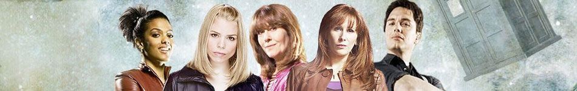

|  | |||||||||
|
|
Amy PondPortrayed by Karen Gillan.Amelia Jessica "Amy" Pond is a fictional character portrayed by Karen Gillan in the long-running British science fiction television series Doctor Who. Amy is a companion of the series protagonist the Doctor, in his eleventh incarnation, played by Matt Smith. She appears in the programme from the fifth series (2010) to midway through the seventh series (2012).The Doctor first meets Amelia when she is seven years old and disturbed by a crack in her wall. He promises to return to the lonely girl in 5 minutes and take her with him in his time and space machine the TARDIS, but accidentally arrives twelve years later, by which time Amy has become cynical about her "imaginary friend". However, she eventually decides to travel with him, and the duo are later joined by her fiance Rory Williams (Arthur Darvill). Amy and Rory marry at the end of the fifth series and in the sixth series Amy gives birth to their daughter, Melody Pond, who is revealed to be recurring character River Song (Alex Kingston). Amelia Pond is introduced in the first episode of the fifth series (2010), "The Eleventh Hour", as a seven-year-old girl living with only her aunt when the Doctor (Matt Smith) crashes into her front yard one night. She asks him to investigate an unusual crack in her wall, but he is interrupted by an alert from his time machine, the TARDIS. He promises Amelia that he will return in five minutes, but is inadvertently late by twelve years. In the intervening period, the Doctor is believed by Amelia's family and friends to be her imaginary friend; her insistence that he is real leads to her being treated by psychiatrists. When the Doctor returns, Amy is nineteen years old and working as a kissogram. She helps him save Earth from the galactic police force the Atraxi, and when he returns two years later she begins travelling with him as his companion.[1] At the end of "Flesh and Stone", Amy reveals that they had left Earth on the eve of her marriage to Rory Williams (Arthur Darvill) and attempts to seduce the Doctor.[2] The Doctor finds Rory and takes him and Amy to 16th century Venice on an intended romantic date after which Rory continues travelling with them.[3] In "Amy's Choice", Amy is pressured to resolve her conflicted feelings for the Doctor and Rory and realises the depth of her love for Rory.[4] At the end of "Cold Blood", Rory is killed and then erased from history by the cracks in the universe. Because he is part of Amy's own time-line, she ceases to remember him.[5] The Doctor takes Amy to 19th century France to lessen his guilt about Rory's loss and she forms a close friendship with famed painter Vincent van Gogh (Tony Curran).[6]
|
||||||||